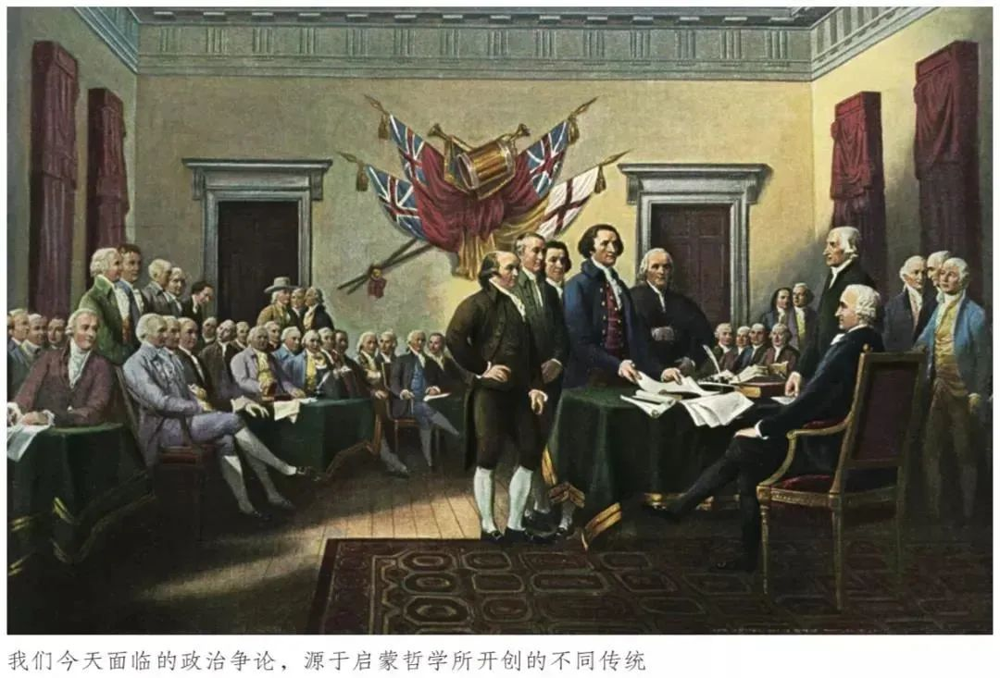
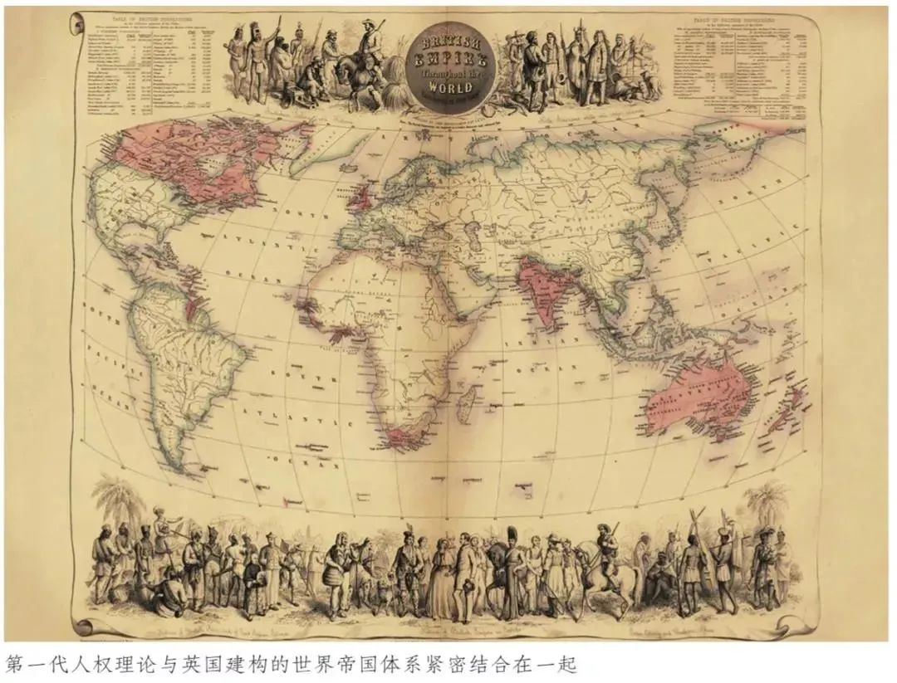
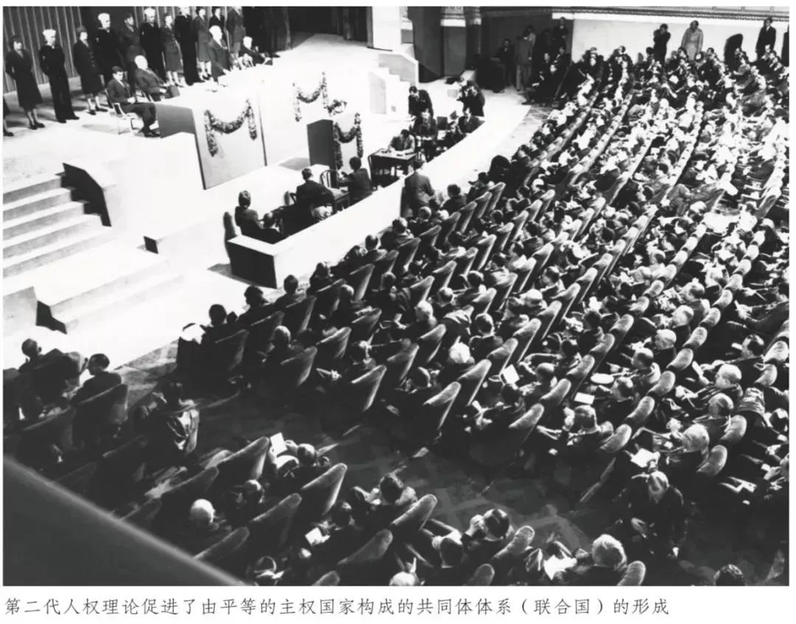
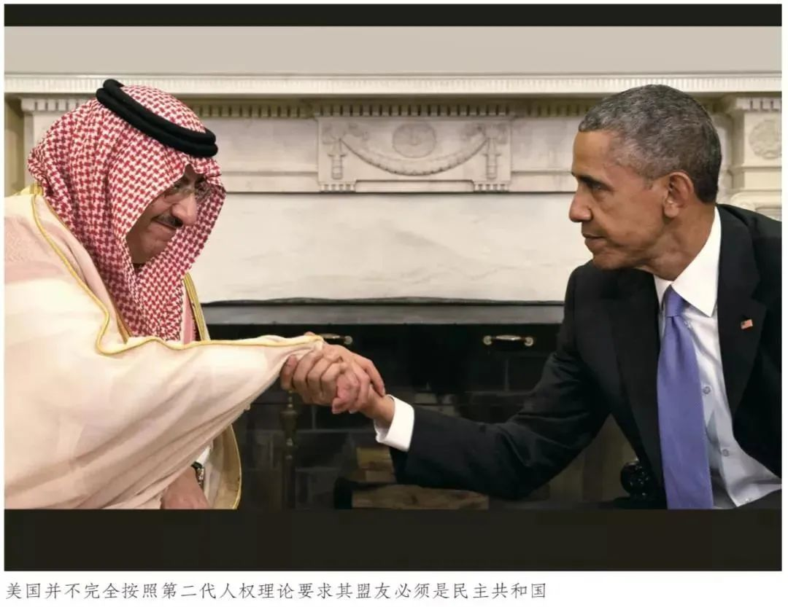
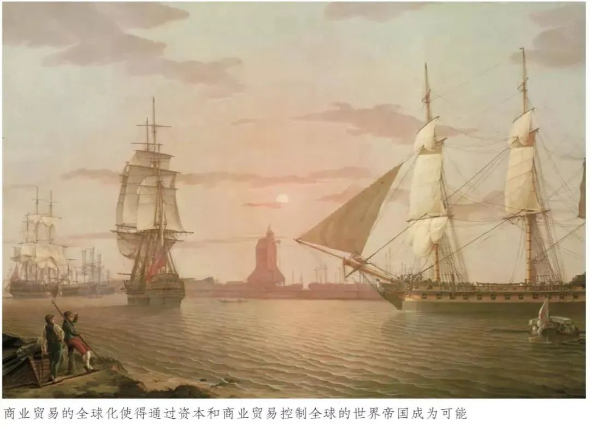

收录于合集
以下文章来源于文化纵横 ，作者强世功
 文化纵横 .
文化纵横 .
倡导文化重建，共同思想未来，发掘不一样的深度阅读。

作品简介
原标题： 贸易与人权（上）——世界帝国与“美国行为的根源” ****
作者： 强世功，北京大学社科部副部长，北京大学法治研究中心主任；北京大学港澳研究中心常务副主任；西南政法大学兼职教授。
来源： 《文化纵横》2021年第5期，第18-29页。
文章导读
2021年初拜登政府上台后，美国对华包围战略出现一个微妙变化：以炒作“新疆棉”事件为起点，中美价值冲突日趋激烈。尽管不少开明人士寄希望于拜登政府改变特朗普任内民粹主义的负面影响，但拜登政府在香港、台湾、新疆等中国事务上掀起的风浪，显露出对华意识形态合围的强烈倾向；而拜登政府即将举行的、有意将中国等国排除在外的“全球民主峰会”，更加剧了两国的价值裂痕。
本文着眼于宏大的历史视野和理论分析，揭示出美国行为的深层根源。作者指出：拜登政府将“贸易”与“人权”紧密挂钩的做法，意味着中美竞争已不单单涉及两国力量对比的变化，更涉及到两种人权理论、两种政治理念、两种全球秩序构想的竞争。 而耐人寻味的是，过去一个世纪以来，美国正是巧妙地将两种人权理论“体用结合”，建构了一个隐蔽的新型世界帝国。
**
**
那么，是哪两种人权理论呢？ 一种是基于英国全球商业贸易所诞生的第一代人权理论，其核心价值是自由 ，强调经济不受政治干涉，但结果却是使后发国家变成“附庸国”或“准殖民地”。美国借助这套人权理论推动全球经济扩张，最终成为全球贸易体系的建构者。 而基于法国大革命等建立的第二代人权理论，其核心是平等 ，意在反叛和颠覆一代人权理论带来的社会不平等，乃至国与国之间的地位不平等和发展不平等。美国借助第二代人权理论在意识形态上的正当性，推动殖民压迫下的民族和国家起来瓦解欧洲殖民帝国体系，而后又推行“门户开放”，迫使这些国家接纳美式全球商业贸易体系。 **这 两种人权理论原本是相互矛盾的，但美国却通过第一代人权为体、第二代人权为用的路径，以一种“外人权”而“内帝国”的表里结构，建立了新型世界帝国。**不过这种矛盾的存在，也是美国行为并不自洽的原因之一。
遗憾的是， 中国似乎尚未充分意识到从“人权”这一普遍价值出发，讲述原本精彩的“人权故事”的重要性，以至于在这场全球意识形态和话语权的争夺中，中国始终处于弱势。 作者认为，这里的关键在于，我们未能从全球视野理解贸易与人权之间的内在关联，未能理解人权理论的不同版本及其内在联系。 尤其是改革开放以来，我们完全接受美国主导的世界帝国体系的第一代人权理论叙事，忽略或遗忘了中国秉持的社会主义传统在第二代人权理论叙事中做出的世界性贡献。 面对美国的挑战，我们首先就要理解美国如何利用贸易与人权之间的互动来构建世界帝国，从根本上理解“美国行为的根源”，如此才可能进一步发展社会主义传统的人权理论和人权叙事。欧亚系统科学研究会特推送此文，供读者思考。本文原刊于“文化纵横”，文章仅代表作者观点。
01
问题的提出：何以讲好“人权”故事？
从特朗普对中国全面发起贸易战以来，不少开明人士仅仅将其看作特朗普在民粹主义支持下的疯狂举动，从而期待秉持自由主义立场的民主党上台之后，拜登政府能够恢复商业理性，着眼于中美两国商业利益而缓和对华关系，通过谈判解决中美两国的经贸分歧。 然而，在2021年3月举世瞩目的中美阿拉斯加对话上，双方争论的并非具体的经贸分歧，而是两国关系的定位。 拜登政府试图向世界表明，美国以 “人权帝国” 形象回归世界并继续领导世界，以矫正特朗普的“美国优先”政策给美国的世界帝国形象带来的损害。为此，拜登政府在中美会谈前一天以人权理由对中国香港施加进一步制裁。紧随其后，西方以“种族灭绝”“强迫劳动”之类的人权理由在联合国对中国展开围攻，并对新疆的棉花出口进行制裁。
“贸易”与“人权”两个问题紧密挂钩，代表了美国民主党未来对华战略的根本转变，即试图按照“新冷战”的思路抢占“人权”的道德制高点，从而在西欧和东亚致力于强化“民主同盟”的建构，动员整个世界帝国的力量向中国全面施加压力。 由此，中美今天的竞争决不能简单理解为中美两国之间的“修昔底德陷阱”，而是美国建构的世界帝国体系压制中国崛起而引发的冲突和竞争。
**
**
如果我们不能从人类历史演化的角度来理解世界帝国体系的形成与发展，那么就看不清美国两党对华政策摇摆中的不变要素，也就无法真正理解中美竞争不单纯是两国力量对比关系的变化，而是涉及两种人权理论、两种政治理念、两种全球秩序构想之间的竞争。在这场竞争中，我们可以看到两种截然不同的国际秩序观： 一种是美国基于经济军事硬实力和文化软实力所形成的帝国主义和霸权主义的世界帝国秩序观；另一种则是中国基于“和而不同”的理念，秉持在联合国框架下通过对话来解决各种争端，在全球化时代致力于建构人类命运共同体的“天下一家”秩序观。
**
**
中美之间的竞争不仅是两国经济、科技和军事实力的竞争，更重要的是围绕观念和价值展开的关于全球政治秩序建构的竞争，这无疑是一场具有普遍历史意义的竞争。 在这场竞争中，“贸易”和“人权”扮演了重要的角色，前者涉及经济政治实力，后者涉及文化价值观念。这意味着，中美两国未来必然会在国际上围绕“人权”问题展开话语权竞争。
**
**
遗憾的是，中国似乎尚未充分意识到从“人权”这一普遍价值出发，讲述原本精彩的“人权故事”的重要性。 一方面，中国在人权事业中做出了举世瞩目的巨大贡献，我们却始终未能讲好中国的“人权故事”；另一方面，我们也未能揭穿美国版“人权故事”的伪善面纱。以至于在这场全球意识形态和话语权的争夺中，中国始终处于弱势。其关键在于，我们未能从全球视野理解贸易与人权之间的内在关联，未能理解人权理论的不同版本及其内在联系。 尤其是改革开放以来，我们完全接受美国主导的世界帝国体系的第一代人权理论叙事，忽略或遗忘了中国秉持的社会主义传统在第二代人权理论叙事中做出的世界性贡献。 因此，中国要与美国争夺人权话语权，首先就要理解美国如何利用贸易与人权之间的互动来构建世界帝国，从根本上理解“美国行为的根源”。在此基础上，我们才能从全球视角出发获得自信，进一步发展社会主义传统的人权理论和人权叙事，从而在全球事务中高举“人权”旗帜，打赢人权话语的舆论战。
02
“自由贸易的帝国”：第一代人权理论
众所周知，今天我们所说的人权理论起源于启蒙哲学，具体而言源于自然状态学说、自然权利学说和社会契约学说，这些学说奠定了现代宪政、法治乃至民主的基本框架。需要注意的是，当时的权利理论称为“自然权利”（natural right），强调是“自然人”在自然状态中作为动物拥有的为所欲为的正当性；而“自然人”一旦加入社会契约成为“公民”，就只能享有公共权力制定的“法律之下的权利”，也就是“公民权利”（civil right）。在这个意义上，只有“自然权利”或“公民权利”，并不存在“人的权利”（human right）。因为“自然人”乃是动物，不是文明意义上的“人”；而自然人一旦成为人，就处在公共权力的约束之下，成为各个国家具体的“公民”。

按照启蒙哲学的理论思路，自然状态中的人在不同社会条件下会过渡到不同政治状态，根据不同的法律体系必然享有不同的“公民权利”。也就是说，人的自然权利是相同的，但在不同国家、民族享有的“公民权利”是不同的。初民社会、游牧民族、农业社会和商业社会的公民权利无疑是不同的，更不用说不同宗教、不同文明传统下的公民权利也会不同。 因此，如果我们真正秉持启蒙哲学传统，“勇敢地运用理性”，就不会接受今天主流学界所流行的“中国古代没有自由、人权、法治、宪政和民主”之类的各种“黑话”，也就不用着力去批判所谓的“西方中心主义”。 这就意味着，我们今天面临的政治争论不能简单地归之于“东方”与“西方”之争，而是源于启蒙哲学所开创的不同传统。而要解决这一争论，就必须在启蒙哲学的基础上运用我们的理性，理解人类的历史和未来。
就18世纪西方的启蒙哲学而言，人权话语的建构是为了给欧洲历史中涌现的一种前所未有的生活状态提供正当性辩护。 这就是地理大发现以来，从西欧兴起的全球商业贸易所推动的市场交换、自由流动、私有财产、契约精神、城市生活等这样一种不断扩散、壮大的社会生活。这种社会经济状态和生活方式给欧洲的封建主义和宗教秩序、东方的帝国秩序以及新发现土地上的初民社会秩序带来了巨大冲击。 西方启蒙思想家们称这种新型生活方式为“市民社会”，或“资产阶级”生活方式，或更为概括性的“资本主义”。 自此，在全球地理版图上形成了西欧的“市民社会”和资本主义秩序、东欧的封建秩序和宗教秩序、东方的农业帝国秩序以及美洲、非洲、大洋洲的初民秩序并存的格局；而商业贸易将曾经这些被分割在不同地理空间的不同文明秩序联系起来，催生了最初的全球化图景。此时，面对新发现空间中的初民社会，刚开始崛起的西方拥有巨大优势，将前者变为殖民地；但面对强大富裕的东方帝国，欧洲处于明显的劣势，绞尽脑汁思考如何通过商业和炮舰挤入已存在了几个世纪的“东方贸易圈”。正是借助炮舰和通过殖民非洲、美洲所获得的白银和廉价产品，西欧才勉强获得加入“东方贸易圈”的“门票”。然而，18世纪之后，欧洲发生的两件大事深刻地改变了全球化的历史图景。

其一，英国通过长期的重商主义战略率先完成工业革命。 工业革命改变了全球格局，英国利用炮舰打开东方帝国的贸易大门，借助廉价的工业品打开东方帝国的广阔市场，从而将这些地区变成自己的原料产地和销售市场。英国由此逐渐从欧洲霸主变成全球霸主，最终在19世纪打败大陆竞争者拿破仑帝国之后，成为唯一的世界霸主。为了将整个世界纳入英国主导的贸易体系，英国开始在全球推广“自由贸易”的理论。英国在成为全球工业中心和贸易中心的同时，伦敦也成为全球金融中心，英镑取代了白银。 这意味着全球经济霸主从东方世界转向西方，从中国转向了英国，全球经济和权势格局发生了历史性的大转移。 最终，英国建立起第一个扩至全球的世界帝国——“自由贸易的帝国”。也正是在工业革命和自由贸易推动的世界帝国兴起和全球权势大转移的背景下，我们才能理解1840年之后的中国历史。
其二，法国大革命在意识形态领域的革命性贡献。 18世纪，英法两国曾长时期在全球层面相互竞争。英国人通过海洋贸易获得了巨大的殖民地和财富，而法国长期被面向大陆的农业政策阻碍，未能向英国那样走向全球商业扩张。在这个意义上，法国大革命可以说是由法国在全球遭受屈辱引发的一种过激精神反应。在这种精神的推动下，不仅产生了大革命的激情，而且产生了大革命之后的重要文件《人和公民权利宣言》。 这个文件将启蒙哲学的抽象性概括发展到极致，率先提出了“人权”（human right）概念。 这个概念不同于启蒙思想家关于“自然权利”的理解，而是将自然状态下人作为动物的权利上升为人的权利。但更重要的是，“ 人权”给出了衡量“人”与“非人”的标准和尺度。具体而言，欧洲人将自己的资本主义生活方式上升为“人类”，从而潜在地将全球其他地理空间和文明秩序中的其他民族视为“非人”或“野蛮人” ；相应地，欧洲资本主义生活方式意味着“文明”，其他生活方式就意味着“野蛮”。既然是“野蛮”，那么不仅殖民主义是正当的，种族主义和大屠杀也变成了正当的。欧洲现代的“野蛮性”实际上源于欧洲人发明和垄断了“人权”概念，进而垄断了对“人”与“非人”的裁判权。
欧洲崛起使得大英帝国主导的“贸易”这种经济社会生活与法国哲学主导的“人权”这种价值观念表达，实现了完美的结合。在贸易推动的资本主义这种特定的社会形态、制度体系和生活方式中形成的“公民权利”，为“人权”充实了具体内容，核心是私有产权、市场交换权、自由贸易权，以及为了保障这些权利而形成的有限政府和宪政法治。这就是我们今天已经烂熟的辉格党叙述中的人权理论逻辑。一旦将这种特定历史条件下的“公民权利”视为“人权”，甚至将之视为划分“人”与“非人”、“文明”与“野蛮”的尺度，那么在欧洲人看来，非洲、美洲的初民社会就仍处于“野蛮”状态，而中国、印度这些拥有漫长历史文化传统和社会政治体系但未能进入资本主义生活方式的东方社会，则依然处在“未开化”阶段。 对这些“野蛮人”和“未开化人”进行殖民征服以及经济社会和政治文化改造，将他们纳入全球资本主义商业贸易的世界帝国体系中，无疑是对这些民族和地区的“拯救”——这被欧洲的人权主义者、人道主义者看作是白人自觉承担的历史天命，是“白人的重担” （吉卜林语）。由此，我们就能理解为什么鼓吹人权的欧洲自由主义者可能同时是帝国主义者。
正是通过隐含的“人”与“非人”、“文明”与“野蛮”的划分尺度， 人权理论成为一种正当化的意识形态，推动全球商业贸易的世界帝国肆意扩展。 正是在世界帝国建构的背景下，“贸易”和“人权”开始携手合作，“贸易”代表西方资本主义的“硬实力”，“人权”代表西方资本主义的“软实力”，共同推动西方资本主义世界帝国的扩张。 我们把这种与自由贸易的世界帝国相匹配的人权理论称为“第一代人权理论”，其要义在于个人主义基础上的私有财产权和自由市场交易权等，即后来贡斯当所说的“现代人的自由”，或柏林所说的“消极自由”。
03
从“革命权”到“发展权”：第二代人权理论的兴起与发展
法国人为欧洲崛起提供的不仅是“人权”这个抽象的概念，更重要的是为“人权”概念赋予不同于商业贸易这种“消极自由权”的内容，那就是平等地、积极地参与政治生活的民主自由权，以及拥有政治统治权的“人民主权”，即贡斯当所说的“古代人的自由”，或柏林所说的“积极自由”。这种人权理论的奠基人无疑是卢梭。 正是基于民主自由权和人民主权，人权理论发展出民主革命的权利、独立建国的权利和独立探索发展道路的权利。马克思、列宁、毛泽东都是这种理论传统的继承人，他们不断继续发展卢梭提出的人民自由权和政治自主权。
**
**
欧洲思想中经常区分英美自由主义与欧陆自由主义，强调前者基于所谓的经验主义，后者基于所谓的唯理主义，等等。这种哲学观念的分野，也体现为两种人权理论以及与之相应的两种发展道路之间的差异：前者是基于英国全球商业贸易的历史经验所形成的第一代人权理论，后者则是基于法国大革命、1848年革命、欧洲共产主义运动以及俄国革命和中国革命的历史经验所形成的第二代人权理论。 第一代人权理论的核心价值是自由，尤其强调个人在经济领域不受政治权力干预的自由，但这种自由的代价是制造、扩大甚至固化了社会不平等。作为对第一代人权理论的校正，第二代人权理论的核心价值是追求平等，是在各领域追求人与人之间、国家之间、民族之间乃至文明之间的平等。 几百年来，第一代人权理论已经成为辉格党叙事中不变的教条；第二代人权理论却能根据历史环境的变化不断探索新的可能性，因此始终处于发展变化之中。

第二代人权理论虽然不断发展变化，但核心要义始终在于对第一代人权理论及其推动的自由贸易的世界帝国的颠覆和反叛。 只是在不同的历史时代，颠覆和反叛的方式不同。早期，马克思、列宁、毛泽东的民主革命权、民族自决权和独立建国权，推动了欧洲殖民帝国体系下的殖民地或半殖民地纷纷独立建国，导致自由贸易的世界帝国陷入分崩离析，于是阶级平等、男女平等、民族平等的社会主义道路，以及发展中国家的“发展权”，就成为人权理论的重要内容。“二战”之后，特别是冷战结束以来，面对自由贸易的世界帝国在全球的胜利，西方左翼提出后现代理论、后种族主义，转而在文化私人生活领域追求平等，试图颠覆世界帝国的文化基础，发达国家政治生活的核心议题也由此转向基于种族、性别的“身份政治”。
一旦我们从两种人权理论推动的两种发展道路的角度考察，就会非常清晰地看到：如果捍卫从大英帝国到美国的自由贸易的世界帝国传统，就必然强调第一代人权的重要性；如果反对英美的世界帝国传统，强调人人平等的共和主义或民族国家平等的世界主义、国际主义传统，必然强调第二代人权理论的重要性。 因为第一代人权理论与英国建构的世界帝国体系紧密结合在一起；而第二代人权理论的最大成就正在于为“二战”后民族国家纷纷独立提供了思想武器，使得世界帝国体系（殖民体系）日趋瓦解，并促进了由平等的主权国家构成的共同体体系（联合国）的形成。 《联合国宪章》不仅强调主权绝对性、国家主权平等和不干涉内政等原则，更重要的是强调不同文明对权利概念的不同理解。两种人权理论及其支撑的两种全球秩序，始终处于不断纠缠的斗争之中。
因此，当我们理解人权理论时，重要的不是话语层面的论述，而是它们在非话语层面推动的历史行动和政治实践。同样是“革命权利”，从一国内追求人人平等的共和体制，发展到全球秩序中追求民族平等、国家平等的联合国体制，前者针对的是殖民主义和封建主义交织在一起所建立的专制政体，后者针对的是基于全球自由贸易理论建立起的世界帝国体系。然而，如果意识到世界帝国体系的经济基础是科技、产业、贸易和金融的中心- 边缘式世界体系， 那么，处于边缘地带的殖民地国家或后发展国家，要摆脱对这种不平等经济体系的“依附”，不仅须运用政治上的“革命权利”来脱离甚至推翻世界帝国体系，更重要的是还应掌握基于独立政治主权的探索符合本国实际的“发展权”，尤其要摆脱国际资本的剥削和压迫，保护本国的产业和市场，推动本国经济发展。 因此，“二战”之后，无论是从美国到德国的保护幼稚产业论，还是马克思主义的计划经济理论，对于发展中国家或第三世界都有着非常巨大的吸引力。
在这种背景下，第二代人权理论的核心概念就从“革命权”转向“发展权”，即强调发展中国家拥有与发达国家一样的发展本国经济的权利。 不少人将第一代人权称为“个体人权”，将第二代人权称为“集体人权”。但无论是“革命权”还是“发展权”，第二代人权理论的基石在于人民主权，主权意味着政治的“自主权”和“独立权”，强调每个国家为了保持独立性，均拥有摧毁世界帝国体系的“革命权”，强调每个国家均有运用独立的智识判断选择经济发展道路、制度模式和文明价值观念的“发展权”。 第一代人权理论必然产生“历史终结”理论，即人类只有一条现代化道路，那就是通向世界帝国体系，而第二代人权理论必然强调“多元现代性”理论，强调发展道路和文明的多样性，强调基于“美美与共”的“天下大同”。

正是基于对资本主义世界帝国体系的批判，在联合国框架下，始终存在着资本主义与社会主义、发达国家与发展中国家、自由贸易与公平贸易（保护主义）、市场经济与计划经济之间的竞争和辩论，这些辩论均围绕两种人权理论展开。这两种力量的博弈在联合国的两个人权公约中得到了体现：《公民权利及政治权利国际公约》体现了第一代人权理论的主张，而《经济、社会、文化权利国际公约》体现了第二代人权理论的主张。发展中国家依据“发展权”等第二代人权理论，名正言顺地选择不同于西方自由市场经济的发展道路和发展模式，尤其强调政府对于推动经济发展的积极作用。 在这种背景下，连信奉第一代人权理论的发达国家也不得不尊重“发展权”概念，并提出了“发展经济学”的话语策略，只不过把私有产权、市场经济、自由贸易作为药方提供给发展中国家。
**
**
04
“美国行为的根源”：两种人权理论的体用结合
从建国时期联邦派与反联邦派的争论开始，美国就始终处在“矛盾”之中，以至于形成了孤立主义与世界主义、理想主义与现实主义、保守主义与自由主义等各种不同理论视角的概括。这种矛盾起源于北美在独立建国过程中，同时继承了欧洲的两种人权理论传统。
无论政治体制的设计，还是推动商业扩张，大英帝国始终是美国建国的模仿对象。联邦派就是第一代人权理论的积极主张者。 对内，他们主张通过三权分立和有限政府的分权理论来约束政治权力；对外，他们始终坚持建构“强大的联邦”来保障个人自由，以为美国人和美国企业在全球开展自由的商业贸易开拓空间。他们还主张建立强大的海军，联邦拥有独立统一的外交权、司法权乃至行政权，甚至学习英国的重商主义战略，保护本国的“幼稚产业”，这一切无疑都以大英帝国作为楷模。 联邦党人的政治理想，就是模仿大英帝国的自由贸易帝国“老路”。主张走这条道路的人，无不用辉格党叙事讲述美国的自由主义传统。 “二战”后基于英美特殊关系的大西洋体系论述，以及冷战中针对社会主义和计划经济的论述，进一步强化了这种辉格党的自由主义叙事。后冷战时期，新自由主义在美国全面兴起，对第二代人权理论展开系统批判，否定法国大革命和欧陆哲学传统，进而否定俄国革命、中国革命和社会主义道路。
然而，在美国建国时期，最强大的精神力量源于第二代人权理论。这种人权理论的美国继承者主张，借助人民主权和共和主义传统反抗殖民帝国体系的“旧世界”，建立一个自由平等的“新世界”。 美国往往被视为“新世界”的代表，就是要彻底抛弃欧洲殖民主义的专制统治，以“人民主权”奠定国家发展的政治独立性，抛弃欧洲在殖民体系下建立的世界帝国，进而通过独立的、平等的国家之间的“联盟”，建立起邦联主义的世界体系。 这实际上相当于走一条不同欧洲殖民帝国主义体系的“新路”。这种主张尤其体现在杰斐逊代表的反联邦派的论述中。 正是在这种传统的基础上，20世纪的威尔逊提出了“大国共同体”这种“国际联盟”构想，这一构想最终发展为后来的联合国体系。 从“一战”到“二战”，美国之所以是“世界灯塔”，就在于与欧洲殖民主义的世界帝国体系相比，美国进步力量主张的这种主权国家独立平等的联盟体系代表着人类进步的方向。
**
**这两种人权理论及其背后的世界政治理念看似相互“矛盾”，美国却恰恰利用二者建构起一个全新的世界帝国。
一方面，美国利用第二代人权的自由建国理论，推动美国向西部扩张，以“联盟”的方式将西部并入“美利坚联合国”的联盟体系，使得美国在北美大陆不断发展壮大，最终建构起一个全新的“大陆帝国”。
正因此，当美国向西的边疆开拓完成之后，特纳才会忧心美国的共和主义理念会随着边疆扩张的结束而走向衰落。
另一方面，美国又利用第一代人权中的商业贸易理论，采取重商主义战略，加快美国经济商业贸易的崛起。
尤其经过南北内战后，美国形成了统一的国内大市场，政府产业保护政策下的“美国体系”也逐渐完备和强大。美国终于摆脱了在英国建构的“棉花帝国”中的边缘地位，成为工业强国，进而成为全球商业贸易的强国。整个19世纪，美国正是在充分利用这两种人权理论的基础上，在大陆和海洋两个地理空间中，在吸纳新州与商业工业发展两个领域飞速扩张，最终实现了自身的崛起并开始登上世界舞台。
20世纪登上世界历史舞台的美国，面对的是英国和俄国代表的欧洲“旧世界”中的殖民帝国传统。面对这种形势，两种看似矛盾的人权理论又构成新一轮的精巧组合。 一方面，美国充分利用第二代人权理论在意识形态上的正当性，推动处于殖民压迫下的民族和国家开展民主革命，不断瓦解欧洲殖民帝国体系。 在这个历史节点上，迈向世界舞台的美国和十月革命后的俄国一样，也扮演着革命性和进步性的角色。如果我们不考虑国内政治，仅仅考虑对国际格局的理解，威尔逊和列宁都是法国大革命思想的继承者，都在第二代人权理论的基础上推动民族自决、民族革命和民族解放运动。虽然他们有不同的现实政治考虑，但在意识形态上都是欧洲殖民帝国体系的颠覆者，都主张主权国家在独立平等的基础上走向国际联盟的道路。正是由于威尔逊的美国和列宁的俄国对第二代人权理论的捍卫和推广，殖民主义、帝国主义的欧洲旧帝国道路在那个时代的全球政治观念中丧失了正当性。两次世界大战后，欧洲殖民主义的帝国体系开始解体，一系列殖民或半殖民国家获得独立或解放。这些国家都按照共和国联盟的世界主义理想，要么加入美国为首的资本主义联盟体系，要么加入苏联为首的社会主义的联盟体系。
另一方面，美国并不完全按照第二代人权理论要求这些新独立国家必须是民主共和国，这些国家甚至可以是封建酋长国或独裁专制国家；但这些国家要加入美国主导的联盟体系，就必须接纳美国按照第一代人权理论建构的全球商业贸易体系。 换言之，美国对加入其联盟的国家有一个隐蔽的条件：必须采取第一代人权理论强调的自由市场体制，尤其要对美国开放其商业贸易领域。这就是与“民族自决”理念相伴随的是“门户开放”政策。在这个意义上， 社会主义国家之所以被美国视为“敌人”，绝非因为它们在理念上宣称要推翻资本主义世界，而是因为它们选择了公有制和计划经济体制，使得美国的资本、商业贸易的经济力量无法渗入。可见，美国实际上始终依据第一代人权理论的资本主义理念来划分政治上的“敌我”关系。
**
**综上所述，
第一代人权理论及其推动的世界帝国始终是美国政治的根本；而第二代人权理论往往只是工具，通过“民族自决”以及后来的“颜色革命”来打击外部的政治对手。
这些国家经过民族自决或政权更迭后，要获得美国的政治认可，就必须采取市场经济体制；至于在市场经济的经济基础上是建立自由民主政体，还是嫁接部落酋长制、独裁专制和宗教政体等其他上层建筑形式，都无所谓；只要其市场对美国的资本和商业开放，接受美国推行的全球经济规则，就可以纳入美国主导的全球商业贸易体系中，变成美国支配下的准殖民地。比较之下，采取计划经济的国家因为完全不受美国经济力量的干涉、渗透和支配，很容易被美国视为“敌人”。
因此，美国在政治上判定敌我的逻辑之所以“矛盾”，真正根源乃是美国试图通过交替使用两种人权理论，建构一个新型的隐蔽的世界帝国。
这就意味着我们要回到世界帝国的内在逻辑来探寻美国行为的根源。

在这方面，阿明提供了一个具有洞见的观察。他认为古代的财富积累主要依赖土地上的物产，为了掠夺其他土地上的财富，古典帝国往往通过军事征服建立直接统治，通过贡赋和税收完成利润榨取和财富积累。为了掩盖经济上的榨取关系，并为军事征服提供正当理由，古典帝国发展出一套具有垄断性的复杂的文明和宗教学说。然而，资本主义时代的财富积累往往通过资本和贸易完成，军事征服和直接统治的必要性大大降低，这就意味着在政治上和文化上完全不需要垄断，但需要建立起一套类似的具有垄断性的关于全球经济的复杂学说。 这套用概念、数学公式和图表建立起来的复杂高深的经济学知识，实际上同样是为了掩盖新型的帝国榨取。 事实上，从这种古典的区域性文明帝国向现代的世界帝国过渡的过程中，恰恰是商业贸易的全球化使得通过资本和商业贸易控制全球的世界帝国成为可能。 作为第一个世界帝国，大英帝国只有在迫不得已的情况下才会采取殖民主义这种“有形帝国”（formal empire）模式，除此之外则尽可能采取“无形帝国”（informal empire）模式，通过商业贸易这只“看不见的手”获取利益。由此，帝国建构艺术的演化史，正是从直接征服的古典帝国形态发展到殖民主义“间接治理”这种中间形态，再发展到“无形帝国”形态的历史。
**
**进入20世纪后，由于威尔逊对第二代人权理论的宣传，更重要的是来自社会主义理念的竞争，再加上有大陆帝国和“门罗主义”的基础，美国可以在遵循第二代人权理论推动民族国家独立的前提下，走“无形帝国”这种新型世界帝国道路，即要求所有新独立国家采取“门户开放”政策，接受自由贸易的市场理念，从而将其纳入美国主导的资本主义世界帝国体系。正是在这种新型世界帝国的建构过程中，两种人权理论以及“民族自决”和“门户开放”两种政策完美地结合在一起。
其中，第一代人权理论推动的“门户开放”为“体”，而第二代人权理论形成的“民族自决”为“用”。
这种新型世界帝国建构，在“二战”后美国看似矛盾的两个方面有很好的体现：在政治上，完全接受第二代人权理论，推动主权国家独立平等地加入“联合国”这个国际联盟体系；但在经济上，通过布林顿森林体系建构起美元霸权和对全球经济的控制。
“二战”后，欧洲各国、日本等大量国家在法律形式上虽然是独立的主权国家，但美国却可以通过经济、金融、科技、信息数据等方式将这些盟友变成“附庸国”或“准殖民地”。
**
**

可见，在美国建构的新型世界帝国中，这两种相互矛盾的人权理论实现了完美的“体用”配合：一方面，美国始终高举“人权”大旗，挥舞“人权”大棒干涉其他国家，主张“人权高于主权”，并采取“人道主义干涉”，摧毁其他国家的主权；另一方面，美国又通过全球市场体系将在前述过程中释放出来的市场和劳动力纳入其世界帝国的分工体系。这种战略在后冷战时代表现得更为明显和突出，因为社会主义阵营的瓦解意味着美国失去了外部制约的力量，可以肆无忌惮地加快世界帝国建构进程。 两种看似“矛盾”的人权理论，形成一种完美的“体用”结合，表面上宣扬第二代人权主张的共和主义和世界主义理想，骨子里则是第一代人权理论支撑的世界帝国建构，从而形成“外人权”而“内帝国”的内外表里结构，共同推动新型世界帝国的建构和全球扩张，这无疑构成了“美国行为的根源”。
排版 | 彭雯昕
本文章来源于《文化纵横》，
文章观点不代表本平台观点。